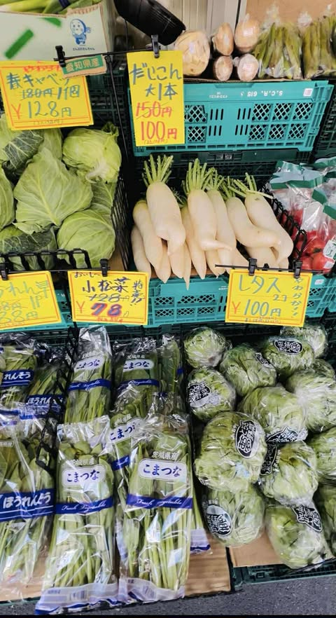
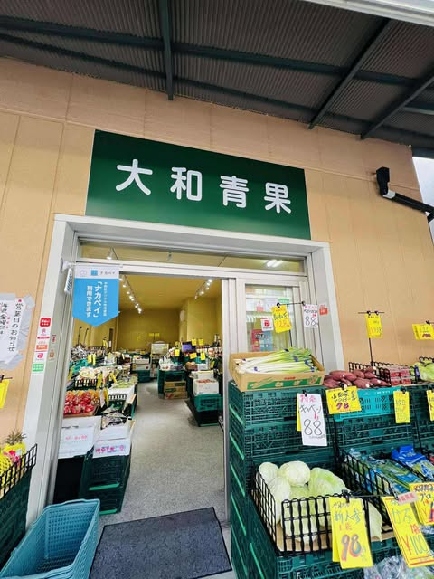
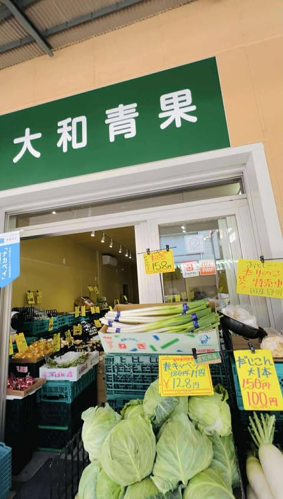

私たちの物語
私たちは、大地の恵みを届けるお手伝いをし、お客様が笑顔に立ち返られる、地域の「食」と「人」をつなぐ架け橋でありたいと願っています。 初めての方も、いつも来てくださる方も、温かく見守ってくださいますよう。

店主からのメッセージ
店主 ― POUJEL SIWASH
「新鮮な野菜と果物で皆さまの毎日を彩ります。ぜひお立ち寄りください！」
大地の恵みをそのままに。こだわりの有機野菜と果物を毎日お届けします。
Nature's finest — delivered fresh every day with care and dedication
野菜の旨味は旬を迎えたときに最大限に引き立ちます。大和青果では、毎朝届くみずみずしい野菜と果物を取り揃え、皆様へお届けしております。どうぞ店頭で自然の甘さをお試しください。
― YAMATO SEIKA 店舗推奨
Discover our colorful selection of fresh produce
 Banana
Banana
 Grapes
Grapes
 Carrot
Carrot
 Broccoli
Broccoli
 Tomato
Tomato
Fresh from the farm to your table! 🌾🥬🥕





私たちは、大地の恵みを届けるお手伝いをし、お客様が笑顔に立ち返られる、地域の「食」と「人」をつなぐ架け橋でありたいと願っています。 初めての方も、いつも来てくださる方も、温かく見守ってくださいますよう。
店主 ― POUJEL SIWASH
「新鮮な野菜と果物で皆さまの毎日を彩ります。ぜひお立ち寄りください！」
〒165-0026
東京都中野区新井5-1-6-1
S CHOME-1-6-1 Arai,
Nakano City, Tokyo
080-9876-7277
yamatoseika7803@gmail.com